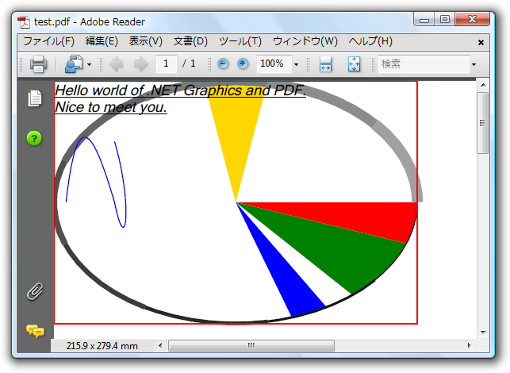

全て展開
全て展開 すべて折りたたむ
すべて折りたたむC1PdfDocument クラスは、線、四角形、楕円、扇形、円弧、丸角の四角形、ポリゴン、ベジェ曲線などのグラフィカル要素をドキュメントに追加するいくつかのメソッドを提供します。
これらのメソッドは、.NET の Graphics クラスにあるメソッドのサブセットであり、同じ Brush クラスと Pen クラスを使用して線や塗り潰し領域の色とスタイルを制御します
C1Pdf では、ポイント単位の座標システムを使用しており、原点はページの左上に配置されることに注意してください（.NET の Graphics クラスのデフォルトの座標システムはピクセルベースです）。
以下の例では、C1Pdf と .NET の Graphics クラスのグラフィックスメソッドがどの程度類似しているかを示しています。サンプルコードは、g という C1PdfDocument クラスを宣言し、扇形、スプライン、およびその他のグラフィカル要素を描画するメソッドを呼び出します。
このサンプルコードの要点は、C1PdfDocument クラスを通常の .NET Graphics オブジェクトと置き換えたとき、コードをコンパイルして同じ結果を得られるという点にあります。
Visual Basic コードの書き方
| Visual Basic |
コードのコピー
|
|---|---|
'PDF ドキュメントを作成します。
Dim g As New C1.C1Pdf.C1PdfDocument()
'描画を設定します。
Dim rect As New RectangleF(0, 0, 300, 200)
Dim text As String = "Hello world of .NET Graphics and PDF." ControlChars.Cr + ControlChars.Lf + "Nice to meet you."
Dim font As New Font("Times New Roman ", 12, FontStyle.Italic Or FontStyle.Underline)
Dim bezierPoints() As PointF = { _
New PointF(10F, 100F), New PointF(20F, 10F),, _
New PointF(35F, 50F), New PointF(50F, 100F), _
|
|
C#コードの書き方
| C# |
コードのコピー
|
|---|---|
// PDF ドキュメントを作成します。 C1.C1Pdf.C1PdfDocument g = new C1.C1Pdf.C1PdfDocument(); // 描画を設定します。 RectangleF rect = new RectangleF(0,0,300,200); string text = "Hello world of .NET Graphics and PDF.\r\n" + "Nice to meet you."; Font font = new Font("Times New Roman", 12, FontStyle.Italic PointF[] bezierPoints = new PointF[] { new PointF(10f, 100f), new PointF(20f, 10f), new PointF(35f, 50f), new PointF(50f, 100f), new PointF(60f, 150f), new PointF(65f, 100f), new PointF(50f, 50f) }; // いくつかのパイスライスを描画します。 int penWidth = 0; int penRGB = 0; g.FillPie(Brushes.Red, rect, 0, 20f); g.FillPie(Brushes.Green, rect, 20f, 30f); g.FillPie(Brushes.Blue, rect, 60f, 12f); g.FillPie(Brushes.Gold, rect, -80f, -20f); // いくつかの円弧を描画します。 for (float startAngle = 0; startAngle 360; startAngle += 40) { Color penColor = Color.FromArgb(penRGB, penRGB, penRGB); Pen pen = new Pen(penColor, penWidth++); penRGB = penRGB + 20; g.DrawArc(pen, rect, startAngle, 40f); } // １つの四角形といくつかのベジェスプライン曲線を描画します。 g.DrawRectangle(Pens.Red, rect); g.DrawBeziers(Pens.Blue, bezierPoints); g.DrawString(text, font, Brushes.Black, rect); |
|
実行結果は以下のようになります。
